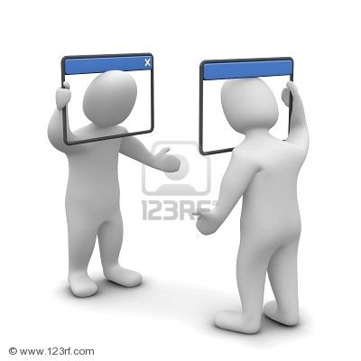
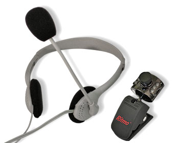
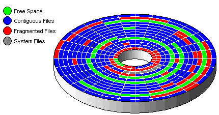

Allerlei
Op deze pagina hebben we het over vele soorten programma's die niet in één van de andere soorten thuishoren. Ondermeer:
- gebruik van 2.4GHz en 5 GHz frequenties voor draadloze netwerken
- bestandattributen aanpassen
- mp3 tags aanpassen
- mp3 audiobestanden vooraan of achteraan verkorten
- audioniveau van mp3 bestanden aanpassen
- een map als partitie benaderen
- branden van CD, DVD of blue ray
- chat en IP gesprekken
- virtual computer
- defragmentatie van de harde schijf
- monitoren van je computer (temperatuur, ...)
- remote access
- enzoverder
Naam: CCleaner
Categorie: Opruimen computer: registry, buffers van browsers, ... .
Waardeoordeel: 5
Waardeoordeel op een schaal van 5 .. 1 (5='need to have', 3='good
to have', 1='nice to have')
Download van internet - lokale kopie
Beschrijving:
CCleaner is een zeer gekend programma om je computer geregeld
op te ruimen: wissen van de buffer van je webbrowser, tijdelijke
bestanden, ... . Opruimen van je registry (verkeerde sleutels,
...). Er verschijnen geregeld updates, zodat je best de versie
van de CCleaner website installeert.
Naam: Teamviewer
Categorie: inloggen op afstand
Waardeoordeel: 3
Waardeoordeel op een schaal van 5 .. 1 (5='need to have', 3='good
to have', 1='nice to have')
Download van internet - lokale kopie
Beschrijving: Met Teamviewer kan iemand op afstand je computer overnemen om hulp te verlenen of problemen op te lossen.
Naam: Putty
Categorie: beter alternatief voor Telnet - terminal
Waardeoordeel: 5
Waardeoordeel op een schaal van 5 .. 1 (5='need to have', 3='good
to have', 1='nice to have')
Download van internet - lokale kopie
Beschrijving: Putty is een terminal emulator, beter dan Telnet want het kan beveiligde verbindingen aan.
Naam: Bitvise
Categorie: aanloggen op een computer via internet
Waardeoordeel: 5
Waardeoordeel op een schaal van 5 .. 1 (5='need to have', 3='good
to have', 1='nice to have')
Download van internet - lokale kopie (voor: client en server)
Beschrijving: Bitvise is een 'remote access programma'.
Naam: TigerVNC
Categorie: laat toe grafische programmas te gebruiken op een andere computer
Waardeoordeel: 5
Waardeoordeel op een schaal van 5 .. 1 (5='need to have', 3='good
to have', 1='nice to have')
Download van internet - lokale kopie (voor: client (viewer)) - server: zie Tiger VNC website.
Beschrijving: VC laat toe grafische programmas te gebruiken op een andere computer. Er bestaan vele varianten van, waaronder VNC zelf. We stellen hier Tiger VNC voor als portable programma (moet je niet installeren, alleen uitvoren).
Naam: Eduroam
Categorie: Draadloos netwerk op de campus
Waardeoordeel: 5
Waardeoordeel op een schaal van 5 .. 1 (5='need to have', 3='good
to have', 1='nice to have')
Download van internet - lokale kopie voor: Windows 10 en 11 - Android/Ipad: zoek app Geteduroam in app store / Google Play
Beschrijving: met dit programma kan je je laptop automatisch configureren voor toegang op Eduroam, het draadloze netwerk van de KULeuven.
Naam: e-id reader
Categorie: identiteitskaart lezen
Waardeoordeel: 3
Waardeoordeel op een schaal van 5 .. 1 (5='need to have', 3='good
to have', 1='nice to have')
Webbrowser installeert deze
programma's automatisch als ze ontbreken.
lokale kopie (voor: viewer installer - quick
installer)
Beschrijving: met dit programma heb je toegang tot:
- https://my.belgium.be/nl
- http://eid.belgium.be/nl/beschikbare_eid-toepassingen/online_overheidstoepassingen/toepassingen_voor_de_overheid
- http://www.taxonweb.be
- http://www.policeonweb.belgium.be
- e-id viewer: (info over de installatie van de quickinstaller) https://faq-eid.belgium.be/nl/windows_software.html
Naam: inSSIDer for Home 3.1.2.1
Categorie: nagaan frequentiegebruik
Waardeoordeel: 5
Waardeoordeel op een schaal van 5 .. 1 (5='need to have', 3='good
to have', 1='nice to have')
Download van internet - lokale kopie (nieuwere versies zijn niet gratis meer, submap bevat oudere versie en de lite versie)
Beschrijving: met dit programma kan je nagaan welke frequenties al veel gebruikt zijn in je omgeving, zodat je zelf oordeelkundig andere frequenties kan instellen op je WAP zodat je minder of geen interferentie meer hebt met je buren én dus een betere WAP ontvangst. Gebruik op 2.4GHz bij voorkeur alleen de kanalen 1, 6 en 11!
Naam: mp3's en mp4's bewerken - DVD naar mp4
- DVD naar mp4
Categorie: audio
Waardeoordeel: 5
Waardeoordeel op een schaal van 5 .. 1 (5='need to have', 3='good
to have', 1='nice to have')
Download van internet mp3gain
mp3trim mp3tag
mp4tools - lokale
kopie mp3gain mp3trim
mp3tag mp4tools
Download van internet: DVD
converteren naar mp4 - lokale kopie
Beschrijving: met
- mp3gain kan je 'het volume' van een mp3 bestand dat standaard
te hard of te zacht staat, aanpassen. Zeer handig om niet telkens
de volumeknop te moeten gebruiken.
- mp3trim kan je vooraan of achteraan stille of ongewenste delen
verwijderen.
- mp3tag laat toe de uitvoerder, titel, ... aan te passen. Dit
laatste is zeer handig in Windows 10. Windows 10 schrijft deze
info immers anders weg dan Windows 7, zodat deze info niet zichtbaar
is in Windows 7.
- mp4tools (bestaat uit mp4splitter en mp4joiner) kan je een
mp4 (film) in twee delen splitsen en daarna delen samenvoegen
tot één grotere film. Zeer handig om eenvoudig
een film te monteren bestaande uit kleinere delen!
- freedvdvideoconverter: er bestaan vele programma's om een DVD
naar een mp4 te converteren. Het hierboven aangehaalde doet het
zeer goed en is eenvoudig in gebruik.
Naam: Attribute changer
Categorie: os
Waardeoordeel: 1
Waardeoordeel op een schaal van 5 .. 1 (5='need to have', 3='good
to have', 1='nice to have')
Download van internet - lokale kopie
Beschrijving: met dit programma kan je de bestandsdatum en andere metadata van bestanden aanpassen!
Naam: Portable-Visual-Subst
Categorie: os
Waardeoordeel: 1
Waardeoordeel op een schaal van 5 .. 1 (5='need to have', 3='good
to have', 1='nice to have')
Download van internet - lokale kopie
Beschrijving: met dit programma kan je een map als een extra partitie benaderen. Zeer handig als je een SSD liever niet partitioneert én toch gewoon bent aan meerdere partities (harde schijven).
Naam: Cd
burner XP
Categorie: cd, dvd en blue ray brandsoftware
Waardeoordeel: 5
Waardeoordeel op een schaal van 5 .. 1 (5='need to have', 3='good
to have', 1='nice to have')
Download van internet - lokale kopie
Beschrijving: met dit programma kan je vc's, dvd's en blue ray schijven branden. In tegenstelling tot sommige andere programma's kan je altijd de schrijfsnelheid bepalen. Men kan ook iso bestanden laten maken.
Naam: Anyburn
Categorie: cd, dvd en blue ray brandsoftware
Waardeoordeel: 5
Waardeoordeel op een schaal van 5 .. 1 (5='need to have', 3='good
to have', 1='nice to have')
Download van internet - lokale kopie
Beschrijving: met dit programma kan je vc's, dvd's en blue ray schijven branden. In tegenstelling tot sommige andere programma's kan je altijd de schrijfsnelheid bepalen. Men kan ook iso bestanden laten maken. Anyburn heeft nog enkele interessante functies die je niet direct in een 'brandprogramma' zou verwachten zoals het aanmaken van USB opstartbare sticks, ... .
Naam: Whatsapp
Categorie: chat en IP gesprekken
Waardeoordeel: 5
Waardeoordeel op een schaal van 5 .. 1 (5='need to have', 3='good
to have', 1='nice to have')
Download van internet via Microsoft Store - lokale kopie (oudere versie!)
Beschrijving: met dit programma kan chatten en spreken (via het internet) (met een camera). Je kan het programma koppelen aan de Whatsapp van je smartphone.
Naam: Camstudio
Categorie: scherm opnemen
Waardeoordeel: 5
Waardeoordeel op een schaal van 5 .. 1 (5='need to have', 3='good
to have', 1='nice to have')
Download van internet - lokale kopie
Beschrijving: met dit programma kan je je scherm opnemen in een film.
Naam: Virtual Box
Categorie: virtuele computer
Waardeoordeel: 3
Waardeoordeel op een schaal van 5 .. 1 (5='need to have', 3='good
to have', 1='nice to have')
Download van internet - lokale kopie
Beschrijving: Dit programma is compatible met Virtual PC maar heeft ook support van de USB bus. Je kan de vhd bestanden van Virtual PC gebruiken. Het programma geeft de mogelijkheid een 'virtuele' computer op je gewone computer te gebruiken. Voor de geavanceerde gebruiker. Nuttig om bijvoorbeeld een programma uit te testen, ... . Aangezien de virtuele computer slechts één (groot) bestand is op de echte computer, maakt dit het eveneens mogelijk een virtuele computer snel op een andere echte computer over te zetten.
Voor Windows 7 (hogere versies) is Virtual PC XP mode beschikbaar. Dit programma geeft wel ondersteuning voor USB apparaten.
Naam: Auslogics disk defrag
Categorie: defragmentatie harde schijf
Waardeoordeel: 1
Waardeoordeel op een schaal van 5 .. 1 (5='need to have', 3='good
to have', 1='nice to have')
Beschrijving: Dit is een snel programma om je harde schijf te defragmenteren. Dit kan je computer sneller laten werken. Tegenwoordig hebben pc's geen harde schijf maar een SSD. In dat geval is defragmenteren zinloos en zelfs af te raden.
Naam: Audiotoepassingen
Categorie: audio
Waardeoordeel: 3
Waardeoordeel op een schaal van 5 .. 1 (5='need to have', 3='good
to have', 1='nice to have')
- Audiorecorder - lokale kopie: opname maken met de micro van de pc
- CD DA xtractor - lokale kopie: extraheren van een audio cd naar mp3
- Audio convertor - lokale kopie: conversie van audioformaten
- Goldwave - lokale kopie: editeren van een mp3